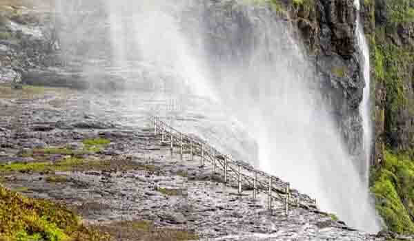
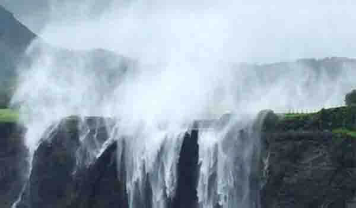

Sandhan Valley, also popular as Maharashtra’s Grand Canyon, is frequented by people for two reasons: trekking and Reverse Waterfalls. Various shades of green hiding under a white aura of mist, Reverse Waterfalls appear surreal if you visit this site during a rainy day.
It is truly a nature lover’s delight near Lonavala and is a famous spot if you are looking for a weekend getaway which is fun yet peaceful. The waterfall is called Reverse Waterfall because due to the high pressure of the wind, the water appears to flow back upwards which looks perfectly ethereal.
The waterfall and its surrounding scenery also attract landscape photographers from various parts of the state and it is one of the best Waterfalls in lonavala.
Location:
Sandhan Valley, Samrad Village